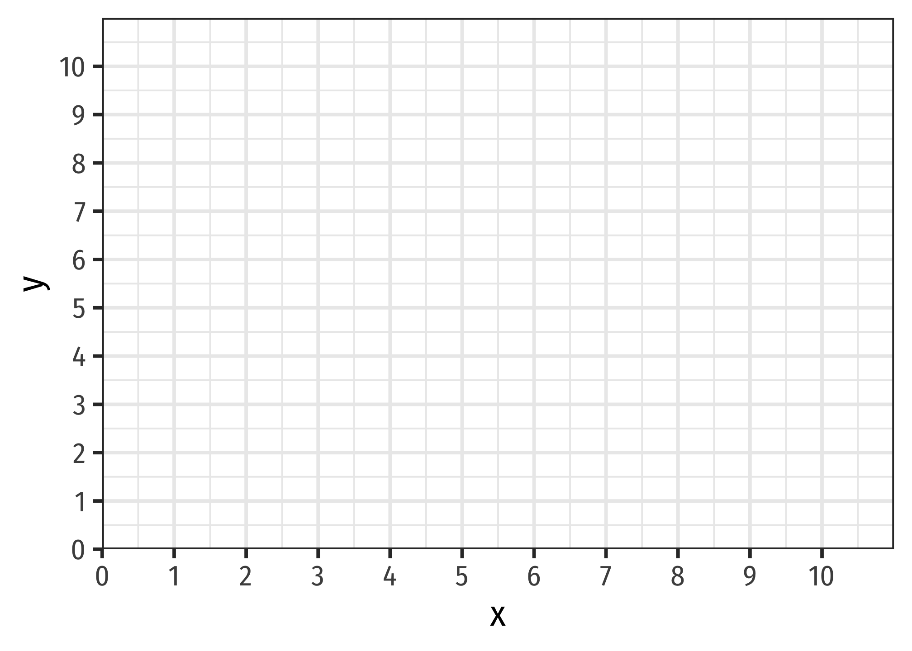

| 0 | 1 | 2 | 3 | |
|---|---|---|---|---|
| x | 0 | |||
| x | 1 | |||
| x | 2 | |||
| x | 3 |
Problem Set 1
Please read the instructions for completing homeworks.
Download as PDF Download as .docx
Answers
Concepts and Critical Thinking
Question 1
How can we use utility functions, which have actual numbers that can be measured and compared, to model preferences and still say with a straight face that preferences are subjective? Hint: what does it mean for a utility function to be ordinal or cardinal? Why can multiple utility functions describe the same preferences?
Question 2
Describe, in your own words, what the marginal rate of substitution between two goods means. How is it different from the slope of the budget constraint?
Question 3
Describe, in your own words, what happens at the optimum consumption point. Why is it the optimum? What does the equality of the slope of the indifference curve and the slope of the budget constraint mean, in English?
Problems
Question 4
Juan enjoys both music and fireworks. His income is $240 per month. Music streaming costs $12 per month, and fireworks cost $8 per bag.
Part A
Graph the budget constraint Juan faces, with music on the vertical axis and fireworks on the horizontal axis.
Part B
If Juan spends all his income on music, how much music can he afford? Plot a point that illustrates this scenario.
Part C
If Juan spends all his income on fireworks, how many bags of reworks can he afford? Plot a point that illustrates this scenario.
Part D
If Juan spends half his income on fireworks and half his income on music, how much of each can he afford? Plot a point that illustrates this scenario.
Part E
Connect the dots to create Juan’s budget constraint. What is the slope of the budget constraint?
Part F
Suppose that a holiday bonus raises Juan’s income temporarily to $360. Draw Juan’s new budget constraint.
Part G
Now suppose that during the holiday, with his holiday bonus, the price of fireworks increases to $12 and the price of music increases to 18. If he spends all of his income on fireworks, how many can Juan buy? How about music? What happens to his budget constraint, and why?
Question 5
Ashkar has the following utility function for consuming peanut butter \((p)\) and jelly \((j)\): \[u(p,j) = 3pj\]
His marginal utilities are:
\[\begin{align*} MU_p &= 3j\\ MU_j &= 3p\\ \end{align*}\]
Put \(p\) on the horizontal axis and \(j\) on the vertical axis.
Part A
Write an equation for \(MRS_{p,j}\).
Part B
Suppose he is currently consuming bundle1 \(a = (4,1)\). How much utility is he getting?
Part C
From his current consumption, how much more utility would he get by consuming 1 more \(p\)? What about 1 more \(j\)?
Part D
From his current consumption, how many units of \(j\) is he willing to give up to get 1 more unit of \(p\) and remain indifferent? How many units of \(p\) is he willing to give up to get 1 more \(j\) and remain indifferent?
Part E
Suppose he can choose between bundles \(a = (4,1)\), \(b=(2,2)\), and \(c=(1,4)\). What are his preferences between them?
Part F
Would he prefer bundle \(d = (2,1)\) over a bundle from part E? Why or why not?
Part G
Sketch a graph, plotting bundles \(a, b, c\), and \(d\). Indicate any indifference curve(s) they are on, and how much utility each provides.
Question 6
Kelly’s utility function for drinking Coke (\(c\)) and Pepsi (\(p\)) is given by:
\[\begin{align*} u(c,p) &= 5c + 2p\\ MU_c &= 5\\ MU_p &= 2\\ \end{align*}\] Put Coke on the horizontal axis and Pepsi on the vertical axis.
Part A
Can Kelly get utility by consuming only Coke or only Pepsi?
Part B
Write an equation for \(MRS_{c,p}\).2
Part C
Are the bundles \((c=2, p=5)\) and \((c=4,p=0)\) on the same indifference curve?
Part D
What is \(MRS_{c,p}\) when \(c=1\) and \(p=5\)?
Part E
Given your answers, what is the relationship between Coke and Pepsi for Kelly?
Part F
Sketch a few indifference curves.
Question 7
A consumer has the following utility function:
\[u(x,y)=\sqrt{xy}\]
Part A
Fill in the following table by calculating the utility for each bundle of \(X\) and \(Y\). Round to two decimal places.
Part B
Graph three indifference curves on the same graph below: the first showing the bundle(s) that yield a utility level of 1; the second showing the bundle(s) that yield a utility level of 2; the third showing the bundle(s) that yield a utility level of 3.

Part C
The marginal utilities are given by:
\[\begin{align*} MU_x&=0.5x^{-0.5}y^{0.5}\\ MU_y&=0.5x^{0.5}y^{-0.5}\\ \end{align*}\]
write an equation for \(MRS_{x,y}\).
Part D
Suppose this consumer has an income of $10, the price of \(x\) is $2.50, and the price of \(y\) is also $2.50. Write an equation for the budget constraint (in graphable form, in terms of \(y\)), and put it on the same graph above.
Part E
Find the optimal combination of \(x\) and \(y\) where the consumer maximizes utility subject to income. Label this point \(A\) on the graph.
Part F
How much utility does the consumer earn at the optimum?